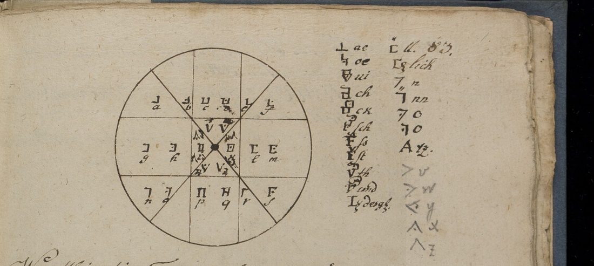
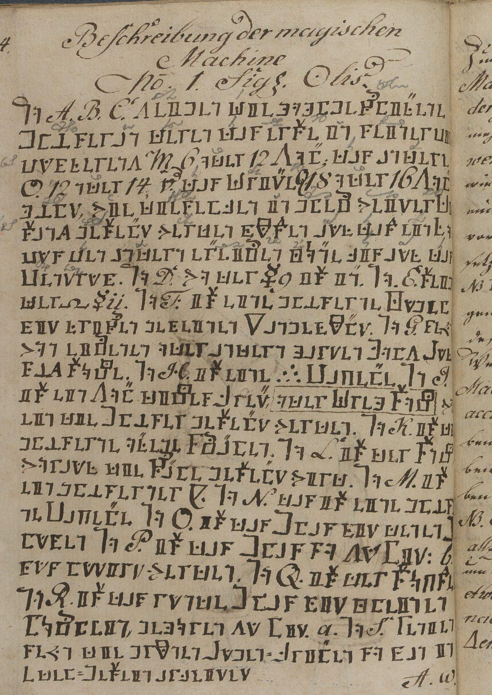
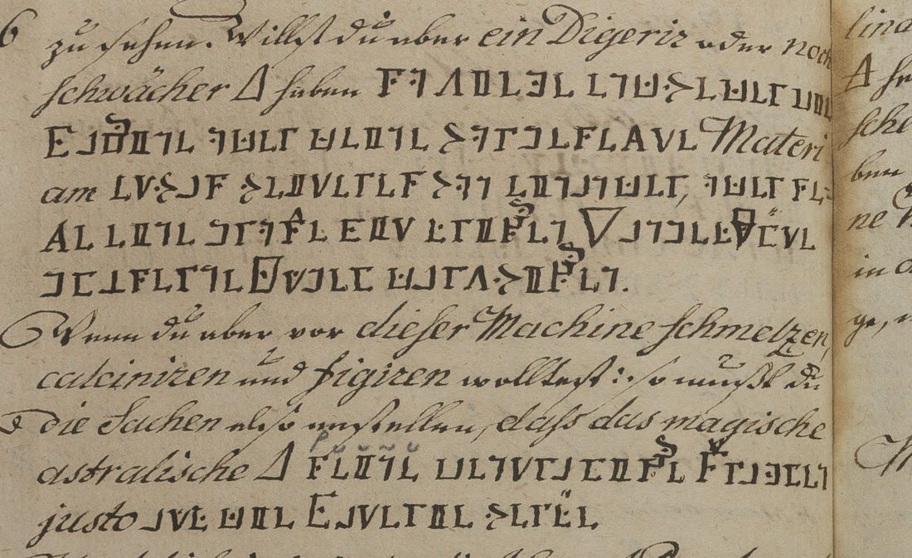

01 The book, not a letter
The title page reads Das zweyte Silentium Dei in Königs Salomonis des Weisen paradiessischen Lustgarten … des Theophrasti Paracelsi Himmels Schlüssels 2ter Theil. It says the text came “von dem Patriarchen und grossen R. Rosen” out of Arabic and Spanish into High German, with its secret script, “durch Johann Arndt”. Arndt is the Lutheran author of Wahres Christentum, and here his name is a borrowed authority. The Yale record dates the copy 18–25 September 1798 at Glücksbrunn, “by Gottfried Klaussen(?)”. DECODE turned that into a sender, a date and a place for a letter, and gave it an “unknown recipient”. The book has 129 numbered pages. The plates on pp. 21–23 show the machine: a stand with three conical glasses aimed at the sun, a sand-capel, a glass globe of water, a distilling flask. The text runs from the mineral kingdom (calcination, the “Aurum potabile”, the “Alumen plumosum”) through the vegetable (distilling plants and wine) to the animal, the seven metals and a “Secretum secretorum”.
Page 16 says the use of the machine is written “in unserer geheimen Sprache, so Crucis Rosen[kreuzer]”. Page 83 prints “Die Figur unserer geheimen Schrift”, under a verse: “Wer allhier diese Figur recht versteht, der sieht, wie unsre Schrift darinnen steht”.
02 The key on page 83

The figure is a circle crossed by two diagonals and a noughts-and-crosses grid. That makes nine square cells and four triangles where the diagonals cross the centre. Each cell holds two letters in alphabetical order, and the second is marked by a dot:
| sign | ┘ | ⊔ | └ | ⊐ | □ | ⊏ | ┐ | ⊓ | ┌ | V | > | < | Λ |
|---|---|---|---|---|---|---|---|---|---|---|---|---|---|
| plain | a | c | e | g | i | l | n | p | r | t | v | z | |
| dotted | b | d | f | h | (k) | m | o | q | s | u | w | y | (x) |
The table beside it adds single signs for common German letter groups. A double stroke over any sign doubles it (ll, tt, nn). It is a textbook pigpen, the kind the eighteenth-century Rosicrucian and masonic societies used. The key has the same shape as their alphabets. It hides nothing from anyone holding the book, and the key fits every passage without a single change.
03 The decipherment

Page 24, the legend to the plates (German as written; ☿ Mercury, ∇ water, ∴ sand):
No. A. B. C. zeigen die hohlgeschliffene Gläsern, deren das erste in seiner Circumferenz M 6 oder 12 Zoll, das andere O. 12 oder 14, das dritte Q 18 oder 16 Zoll hält, wie dieselben in gleich weiter Distanz gestellet werden müssen, auf das ein Focus den andern erreichen könne bis auf das Centrum. No. D. wo der ☿ ist in. No. E. steig der Spiritus ☿ii. No. F. ist eine gläserne Kugel mit frischen gemeinen ∇ angefüllt. No. G. sey von eichenen oder andern harten Holz Aufsäz Stöcke. No. H. ist eine ∴ Capelle. No. I. ist ein Zoll dickes Brett oder Drehstock, darein die Gläser gestellet werden. No. K. ist d[ie] gläserne offene Schaalen. No. L. ist der Stock, worauf die Schaale gestellt wird. No. M. ist ein gläserner [?]. No. N. das ist eine gläserne Capelle. No. O. ist das Glas mit denen Blumen. No. P. ist das Glas, so zu lit. b. muss lutirt werden. No. Q. ist der Stöpsel. No. R. ist das runde Glas mit kleinen Löchlein, gehören zu lit. a. No. S. Renien seyn die grünen Augen-Brillen, so man in Edel-Gestein arbeitet.
In English: A, B and C are the ground concave glasses. The first is 6 or 12 inches round, the second 12 or 14, the third 18 or 16. They must stand at equal distances so that one focus reaches the next, down to the centre. D is where the mercury goes, and at E its spirit rises. F is a glass globe filled with fresh common water. G are stands of oak or other hard wood, H a sand-capel, and I an inch-thick board or turntable that holds the glasses. K is the open glass dishes and L the stand the dish sits on. M is a glass [vessel, sign not in the key] and N a glass capel. O is the glass with the flowers, P the glass to be luted at b, and Q the stopper. R is the round glass with small holes, which belongs to a. S, “Renien”, are the green spectacles used when working gemstones.
The short passages. Elsewhere the cipher hides only the working words of a recipe: vessel, material, dose or procedure. The sentence around it is in clear German, as below. The cipher words are in bold. The recipes are translated in full in section 04.
| p. | in context |
|---|---|
| 25 | set behind the receiver die ∇-Kugel No. F.; NB diese Kugel must stand fast |
| 29 | spread the ore-slime on einen breiten glatten Reibe- oder Marmor-Stein |
| 31, 32 | a dish shaped like einer Capellen; … gläsernen Capellen |
| 43 | a ducat of fine gold in einer gläsernen Schalen; then a piece of gemeinen 🜍 [sulphur] |
| 45, 47 | in einer solchen Glas Schaalen; bring it in Glas Schaalen before the machine, nach und nach |
| 53 | take rein ausgelassenen nitrum in the Glas-Schale nach K.; der Salpeter turns yellow and reddish, nach und nach |
| 54, 55 | so that it has ein wenig dig[…] heat; näher zu unsern magischen Feuer nach und nach einkoche einen hochrothen Pulver; gelben; a small part dieses Pulvers in fresh water |
| 56 | the Astrum Mundi obtained durch den Salpeter |
| 60 | then lutire das Glas No. S. unten |
| 61, 62 | your spirit with its oil in die offene Glas Schaalen; offene Glas Schaalen |
| 70 | the seven metals, one on the other, in einen weiten und starcken gläsernen Tiegel zur Zeit ihrer Regierung und eigenen Planeten Stunde |
| 75 | wie grösser die vorgebildete Brenn-Gläser sein, die bessern Gewalt haben sie, einige sta-cken zu enden; aber zu unsern hier beschriebenen Wercken seyn sie mit M. O. und Q. Zollen, endlich biss 7 Zollen gross genug. For melting, da sollst das grösste Glas vornen gegen der Sonne stehend machen, so that the rays fall together in eine Fuge; to distil, wende deine Machine um, dass das kleinste Glas gegen der Sonne zu stehe; … Machine mit dem Spiritu Mercurii |
| 76 | for a gentler heat so ziehe entweder die Machine oder deine vorgesezte Materiam etwas weiteres von einander, oder setze eine grosse mit frischen ∇ angefüllte gläserne Kugel darzwischen; so that the fire casts seine centralische Strahlen justo auf die Materie werffe |

04 The recipes in English
These are the recipes that carry the deciphered passages, translated whole from the clear German around them. Words written in the secret script are in bold. Pious asides and the attacks on apothecaries are cut to […]. (?) marks an uncertain reading of the clear hand. The German transcription is in mellon136/clear/. The figures of the machine are on pp. 21–23, and p. 24 above gives the letters used for them.
1. The spirit of mercury (pp. 25–26)
To begin using the machine, make the spirit of common mercury, which cannot otherwise be brought into its prima ens. Put common mercury into a cucurbit, as the machine shows. Set a still-head on it and attach a receiver. Behind the receiver place the water-globe No. F. NB this globe must stay there the whole time. It must not be closed, and if the water runs low it must be topped up. Then point the machine exactly at the sun, so that the third focus reaches the mercury in the flask. Its heat drives the mercury over the still-head as a spirit. NB: too quick and sudden a fire does harm. Set the stand with the machine somewhat farther off than the focus reaches, and move it up to the focus little by little. The mercury then rises with force into the receiver and turns into a spirit or aqua viscosa. This spirit leads all metallic bodies back into their prima materia, making a spiritual thing out of a bodily one.
2. The philosophical glass stone: silver, gold and a medicine (pp. 26–28)
Coagulate the spirit of mercury again in an open glass dish before the machine into a metallic stone. Then melt it with the same fire into a glass, a “salamander”: this is the philosophical glass stone.
- Silver. Melt 1 part of the ground glass with 100 parts of fine silver. This gives a white, brittle matter that grinds easily to powder. Add 1 part of this to 1,000 parts of common mercury in open glass dishes, once the fire has taken hold and the mercury begins to smoke, and it is fixed into the best silver. This silver is too compact, as heavy as gold, so alloy each Mark of it with 4 Loth of raw copper. The copper’s sulphur “opens its pores”, and it stays good silver.
- Gold. Done the same way with gold, “the profit could well run higher, for it is one and the same work”.
- Medicine. The stone must never be taken raw. Put a small piece into a glass of wine for 12 hours, drink the wine and wait for the sweat. It purges by stool and urine, and in plague time it is “a universal medicine”.
3. Improving ores and minerals, in four operations (pp. 28–32)
The book says this works for all tame and wild ores (gold, silver, iron, mercury, tin, copper and lead ores) and for the wild minerals: pyrites, blende, bismuth, glance, cobalt, marcasite, spar, vitriol earth, calamine, ochre, feather alum, tin-stone, sands and coloured mineral earths.
The main rule. Take a tame or wild mineral and assay it on the mine hundredweight. Stamp it crude, as it comes from the mine, and wash off as much of the rock as you can. Set up the machine. Dry the slimes and spread them, not too thick, on a broad smooth grinding- or marble-stone. Let the machine calcine them, stirring all the time with a piece of wood, or better a glass rod, so that they take the heat evenly. Weigh the calcined mineral again and you will find “a rich increase”. The book's explanation is that the spiritus mundi gathers in it, and the wild ores ripen and fix themselves without any addition.
Second operation. Put the calcined mineral into a wide, strong glass dish and let the fire work into its middle at full strength. It soon melts without any flux. Take the machine away and let it cool.
Third operation, refining. Take a strong, thick glass dish of suitable size, shaped like a capel but hollowed deeper. Lay the melted metal in it and add lead, as in ordinary cupelling. Set the fire on it: the lead fumes away and leaves the finest bead, “far higher than on a capel”. An ordinary bone-ash capel will not do, because the spiritus mundi would sink into it and spoil the work.
Fourth operation, parting. If the bead holds gold and silver together, lay it in a glass dish, moderately deep and not too wide, and melt it before the machine. Throw a little powdered glass on it bit by bit. The gold separates, and the silver goes with the glass into a slag. Then cupel the slag with lead in the glass capel described above. You now have the silver and the gold, each refined separately.
4. Aurum potabile, drinkable gold (pp. 43–44)
Melt a ducat’s weight of fine gold in a glass dish before the machine and keep it molten until it begins to smoke. Then draw it quickly away from the machine, so that it has only a calcining heat. Throw a small piece of common sulphur on it and let it burn off, and the gold turns brittle and quite red. Stir it round with a glass rod and calcine it until it no longer smokes. Turn the machine away and let it cool. The gold is now a brittle matter, “spread with many thousand beautiful colours”, and the text claims it has gained half its weight in “astral salt”. It dissolves in wine at once, tinges it deep red and rises with it over the still-head, so it can never be turned back into gold. Boil it all down before the machine into a sweet salt. The dose is one drop, or half a Gran by weight, in wine. It works by sweating, and the book says it cures every disease and keeps a man healthy to the term God has set.
5. Feather alum (p. 45)
Take feather alum (alumen plumosum) crude, as it comes from the mine, and treat it before the machine in such a glass dish, the same way as the pearls earlier in the book. It gives “a very noble stone” of many colours, “our true electrum”. This is the root of the tincture that raises lesser gemstones to perfection. The next page claims the same treatment makes talc, “invincible in fire”, fluid and turns it into a like tincture.
6. Oil of talc (pp. 47–48)
Put common talc in the glass dish before the machine. Bring it up little by little, so that the heat only calcines it. Calcine it until it falls into a blue powder and no longer smokes. Then draw the machine back gently, little by little, so that for about 13 (?) hours it gives only a digesting heat. The calcined talc then draws the spiritus mundi to itself and dissolves into a flesh-coloured oil and spirit. Every metal, mineral, stone, coral and pearl is brought to spirit and oil the same way. The more a mineral has been calcined, the more strongly it draws the world-spirit. In a stronger fire the solution coagulates again and fixes itself “in the very highest degree”, for health and for improving metals and gemstones.
7. Drawing down the Star of the World, and a water that multiplies seed (pp. 53–55)
The vegetable tinctures are of two kinds, one for multiplying plants and one for health. The multiplying tincture needs the Astrum Mundi first.
Attractio Astri Mundi. Take purely melted-down nitre, spread it thinly in the glass dish, as at K., and calcine it very gently before the machine until all its moisture has fumed off and the saltpetre turns yellow and reddish. Then draw it little by little away from the machine until it has only a little digesting [?] heat. It now draws the spiritus mundi to itself, “its very nearest blood-relation”. In a few hours one can collect “many measures” of the world-spirit.
Set the collected spirit nearer to our magical fire, so that it little by little boils down into a bright-red powder, or one of the yellow kind. The author breaks off here: three words more, he says, would show the philosophers’ stone to the whole world.
Throw a small part of this powder into a great deal of fresh water. It rises and ferments, and the froth is skimmed off. Sprinkle grains of wheat or any other seed with this tinging water before sowing: the book promises a thousandfold increase and fruit of unheard-of size. For plants, trees and shrubs, wet their roots with it a little.
8. The vitrified stone of the Astrum Mundi (p. 56)
Take the Astrum Mundi caught by means of the saltpetre. After calcining it, melt it before the machine into a vitrified stone, which takes 4 to 5 (?) hours. “All the forces of nature” are said to be in this stone, for wonders “in all three kingdoms”. A curse on anyone who misuses it (Deuteronomy 28:59) runs on to p. 59.
9. Distilling flowers downwards (pp. 59–61)
What the machine drives up over a still-head is only a clear spirit, though it is “a thousand times better” than what a coal fire gives. With plants, what is driven down (per descensum) is far finer. Fill glass No. O (the glass for the flowers) heaped full with rose petals or other flowers, and close the stopper on top. Lute the glass No. S. underneath, set the whole in a ring on a stand before the machine, and let the fire work very gently. It drives first the spirit, then the oil, down into glass No. P. One drop of it is worth more than a thousand of waters distilled the common way. The cipher has “No. S.”, but on p. 24 the glass to be luted is P, and the clear text on p. 61 calls it P.
10. The “cure” of all flowers and herbs (pp. 61–62)
Put the spirit and oil driven down above into the open glass dishes and let the fire shine on them gently. They draw the Astra Mundi to themselves and boil down to a very fine powder of the same colour as the flowers. Of this, 1 grain to 1 Maas of fresh water tinges it all into the best rose water, or the water of whichever flower it came from.
11. Concentration of wine: the stone that turns water into wine (pp. 62–63)
The vegetable universal is made from the noblest wine. It lets a person “carry about with him two hundred and more Ohm of wine”. Choose the wine you find best to drink. Fill the open glass dishes with it and set the machine so that the rays strike down on it steadily. It begins to simmer. Do not let it boil hard, but let it boil down to half and keep adding more, or let it drip in from another vessel, no faster than it boils away. Go on until three or four Maas or more have been boiled down to dryness. Then strengthen the fire and hold what is left in fusion for an hour, which increases it by a third. Turn the machine aside and let it cool: “you then have a stone that turns water into wine”. To raise it higher, crush the stone, calcine it and melt it in an open glass dish over a very gentle fire into a liquor.
12. The electrum of the seven metals and the magic mirror (pp. 69–71)
No one can work wonders with characters, sigils or electrum amulets without first making an electrum with this fire, in the right conjunction and course of the planets. Take all seven metals in equal weight, fine and refined, and melt them one after another in a wide and strong glass crucible, each at the time of its rule and in its own planetary hour. Gold goes on Sunday in the hour of the Sun, silver on Monday, iron on Tuesday, mercury on Wednesday, tin on Thursday, copper on Friday and lead on Saturday. Each will be found heavier. Then melt all seven together on a Sunday in the hour of the Sun into an electrum metallicum. Cast it in a mirror mould and have it polished. The polisher must never look into the mirror with bare eyes, but always through spectacles (“Renien”, the green glasses of p. 24): whoever first looks into it is its master. It then shows whatever is asked of it. A little bell cast from the same electrum is said to put a whole army to flight.
13. How to set the machine for each fire (pp. 75–76)
The larger the burning glasses, the greater their power […] but for the works described here, glasses of M., O. and Q. inches, up to 7 inches, are large enough. Too much power overdrives the work. Each operation needs its own fire:
- Melting: make the largest glass stand in front, facing the sun. It throws the rays together onto the matter into one joint.
- Distilling: turn the machine round so that the smallest glass faces the sun. The rays spread and warm the whole glass, as in the machine with the Spiritus Mercurii (recipe 1).
- Digesting, or a still weaker fire: either draw the machine and the matter set before it somewhat further apart, or set a large glass globe filled with fresh water between them.
- Melting, calcining and fixing: set it so that the fire casts its central rays exactly onto the matter. “This is, NB NB, the chief rule in all the works.”
The book then turns to the “receptacle No. 2” for catching the Astrum Mundi (pp. 76–78): a helm and counter-flask made in one piece, pierced with sixteen holes the width of a little finger, four to each quarter of the sky. The world-spirit is driven through them into a round receiver.
05 What was already known
Nils Kopal told Klaus Schmeh about the book, and Schmeh put it on his Encrypted Book List as no. 00114. His post on Cipherbrain (4 March 2022) links a video by Kopal. In it Kopal decrypts page 24 from a transcription by George Lasry and shows how CrypTool would break it without the key. The post prints the p. 24 plaintext and points to the key on p. 83. On 10 March 2022 a reader, Christof Rieber, commented with readings of most of the short passages. The search that found these came after the key on p. 83 had been identified here, but before any passage was transcribed. They were then used as a check.
- Page 24 agrees with the published text except for small points: Stöpsel (not “Stopfel”), Löchlein, zu lit. b. muss lutirt werden, arbeitet, and the open sign after “No. M. ist ein gläserner”, which the published text passes over.
- Rieber’s list has gaps and some misreadings. He gives “rotiere das Glass noch unten” for lutire das Glas No. S. unten (p. 60) and “noch” for the cipher No. (pp. 25, 60). He gives “nachtnach” for nach und nach and “einige raschen” for einige sta-cken (p. 75). The p. 75 word is still doubtful.
- Rieber does not have the second passage on p. 47 (nach und nach), the third on p. 53, the one on p. 56 (durch den Salpeter), or seine centralische Strahlen … auf die Materie werffe on p. 76.
06 Method
The Yale Digital Collections site blocks scripted requests, so the manifest was opened in a browser and the 69 images were then fetched from the IIIF server. Contact sheets of every opening located the cipher: p. 24 and pp. 25–76. No page before 24 or after 76 has cipher, except the key on p. 83. Pages 84–87 give a cabbalistic letter-number table in clear. Each passage was cut from the full-resolution image, transcribed sign by sign and decrypted with the p. 83 key. The transcription is kept as key values with ligature signs bracketed, and a short script maps it back to signs and counts it: 1,545 signs, 345 words, two open.
07 What remains uncertain
- Open (2 signs). p. 24, No. M.: one sign after “ein gläserner” that is not in the key, probably a pictogram of the vessel. p. 54: the word after “ein wenig dig” runs into the gutter, probably digerirende (Hitze). Yale’s image is the only one available.
- Doubtful (C). p. 24 “steig der Spiritus” (or steigen); p. 24 “No. K. ist d gläserne” (one sign, perhaps short for die); p. 53 “nach K.” (a clear capital after the cipher; sense unclear); p. 75 “einige sta-cken zu enden”, decrypted letter by letter but obscure. “Renien” (p. 24, No. S.) decrypts cleanly but is an obscure word. On p. 60 the cipher has “lutire das Glas No. S.”, but the glass to be luted is P on p. 24 and on p. 61. The copyist probably slipped, or the S is an unusual P; the decipherment keeps the S.
- Everything else is H: decrypted sign by sign with the book’s key, gives sense, and consistent with the clear text and the plates.
08 Sources
- Beinecke Rare Book and Manuscript Library, Mellon MS 136, Das zweyte Silentium Dei in Königs Salomonis des Weisen paradiessischen Lustgarten, full images at Yale Digital Collections (pp. 24–25 is image 16, p. 83 image 45). The same book is DECODE record R2873 (login).
- Klaus Schmeh, “Ein verschlüsseltes Buch aus dem Jahr 1798”, Cipherbrain, 4 March 2022, with Nils Kopal’s video and George Lasry’s transcription of p. 24; comments by Christof Rieber, 10 March 2022.
- Ashrowan 2016, PhD thesis appendices on alchemical catoptrics, University of Edinburgh (ERA 1842/31017), cited in the comments; not seen.
Transcription, decipherment, decoder, notes and profile: mellon136/.